Tutorial — a Neuropixels 2.0 probe on the OneBox, one screen at a time#
A step-by-step walkthrough of a real session, captured on 2026-09-02 on the rig: a Neuropixels 2.0 multishank probe on the OneBox, with a PXIe basestation also attached (which is why the source menu asks). Every screenshot below is the actual screen at that moment, taken by the same code that drove the session, with the applied probe map read back from the probe to confirm each step took.
This page shows what to click, in order. The reference for why — the FTDI driver, the hardware
safety rule, recording, the OneBox ADC wiring — is OneBox-NPX2.md; the toolbar
control-by-control is in README.md; every control the live view has is in
GUI-Guide.md.
Video. A narrated screen recording of this walkthrough, with the app's own audio on a separate track, is being produced by the operator. Until it lands, the stills below are the sequence.
1. Launch#
Start SpikesPeak (run_spikespeak.bat, or the shortcut). The GUI opens in the browser with nothing
connected: the Source button at the top right reads None, and the live area shows the splash.

2. Choose the OneBox#
Click Source. The menu scans the hardware first (a scan opens nothing, so it is safe), and with a OneBox and a PXIe basestation both attached it says so and lists each by name, so you are never guessed for.
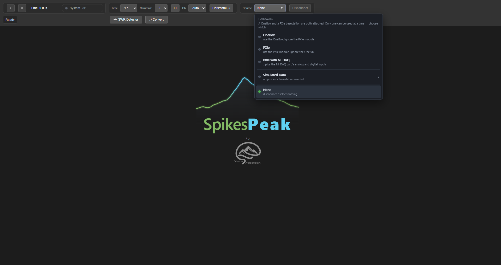
The third row in this capture reads PXIe with NI-DAQ; it has since been relabeled PXIe + NI-DAQ — the explicit profile, which connects, rather than the auto-detecting one, which asked again.
Choose OneBox. The backend opens the box, finds the headstage and the probe, and writes the probe's default channel map. The status line says what it is doing.
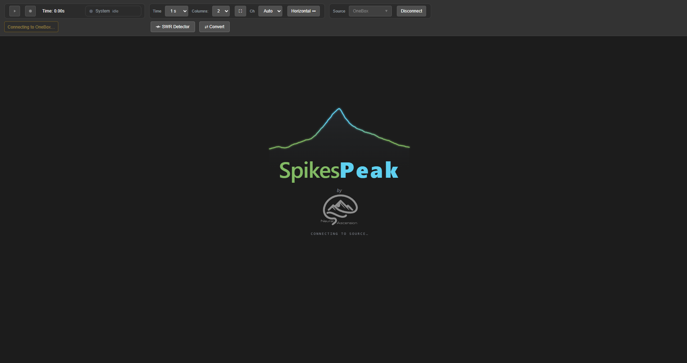
When it is done the Probe Map tab opens on the default map: shank 0, bank 0, the 384 electrodes nearest the tip. The status line names the probe it found.

If only one basestation is attached the menu shows a single Neuropixels row instead, and picking it connects straight away. If two probes are on one basestation the app asks which port the same way; that case is in
OneBox-NPX2.md.
3. Choose electrodes across the shanks#
Select Edit Map. The four shanks are drawn left to right as 0, 1, 2, 3, and the green dots are the electrodes currently routed to the 384 read-out channels.
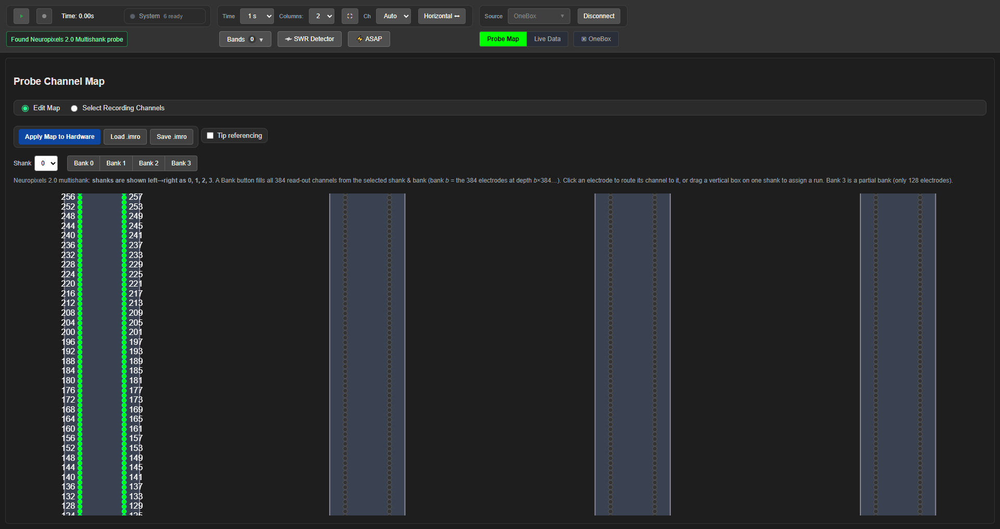
Each shank is 640 rows tall — far more than fits on screen — so scroll with the mouse wheel to travel it. This is the tip (row 0, the deepest electrodes):
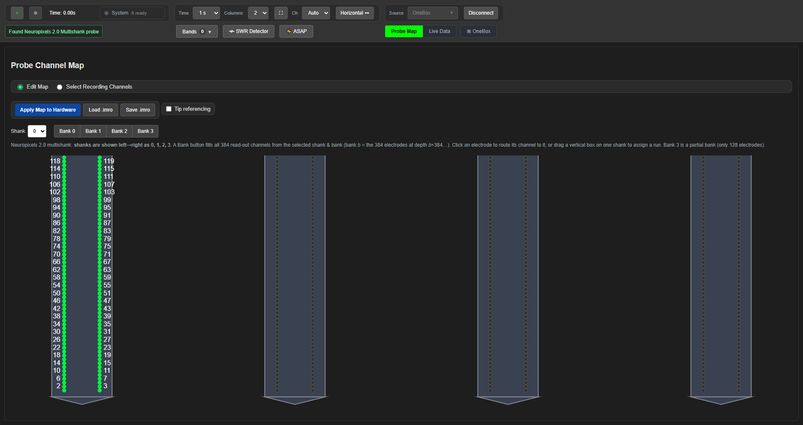
…and this is the top, 639 rows up. Only 384 of the probe's 5,120 electrodes can be read at once; the map is where you choose which.
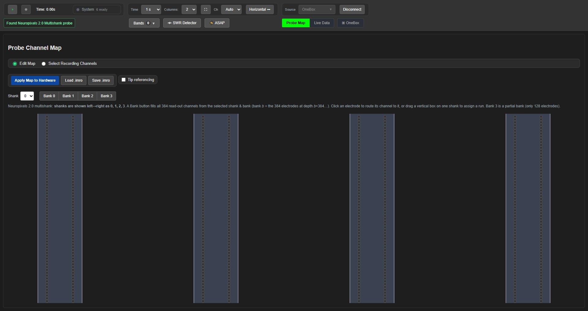
Drag along a shank to choose a run of electrodes. Each electrode in the drag takes over a read-out channel; the other shanks keep what they had. Here the selection is spread across three shanks at three different depths — the point of a multishank probe:
Shank 1, rows 120–175 (112 channels):
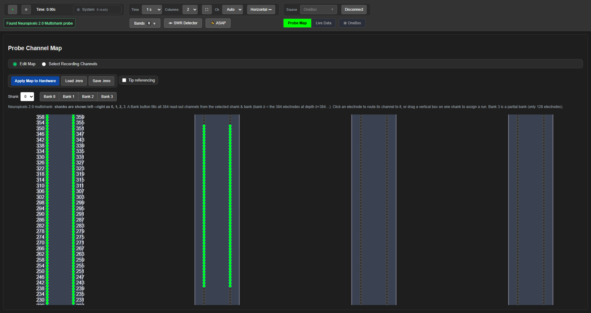
Shank 3, rows 420–470 (102 channels):

Shank 2, rows 30–80 (102 channels):

Scroll back through the probe to review what you chose. Three shanks, three depths:
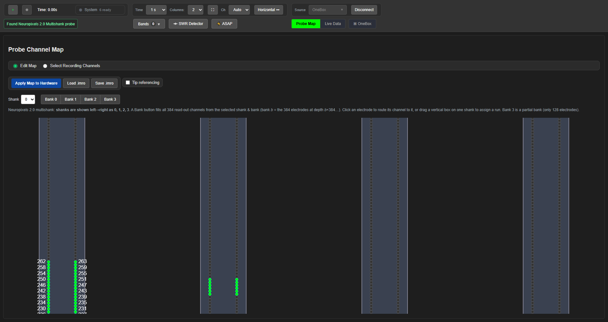
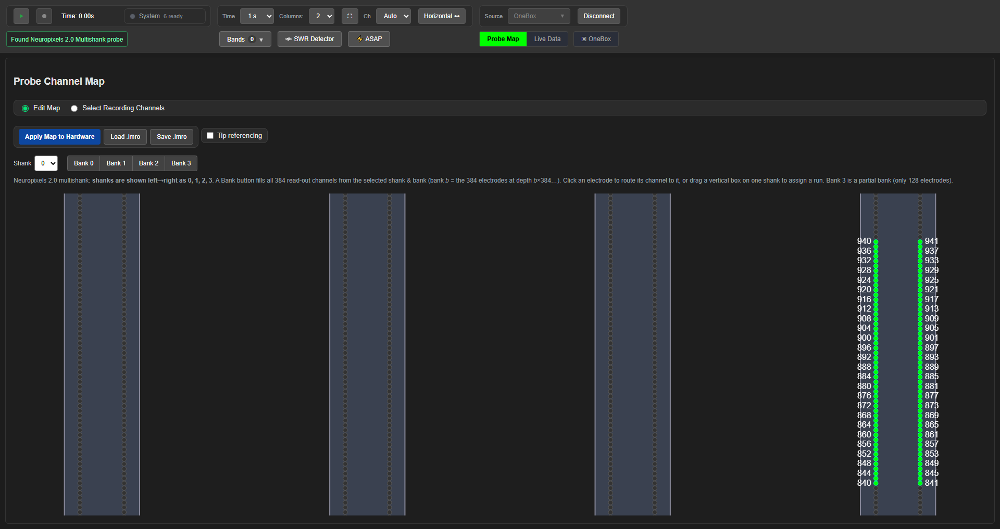
The Shank dropdown and the Bank 0 … Bank 3 buttons above the map are the quick way: one click routes all 384 channels to one bank of one shank. Drags are for anything more particular.
4. Apply the map to the probe#
Nothing has reached the hardware yet. Click Apply Map to Hardware. The backend writes the selection to the probe and reads it back; the status line reports the result, and the map on screen is now the map on the probe.
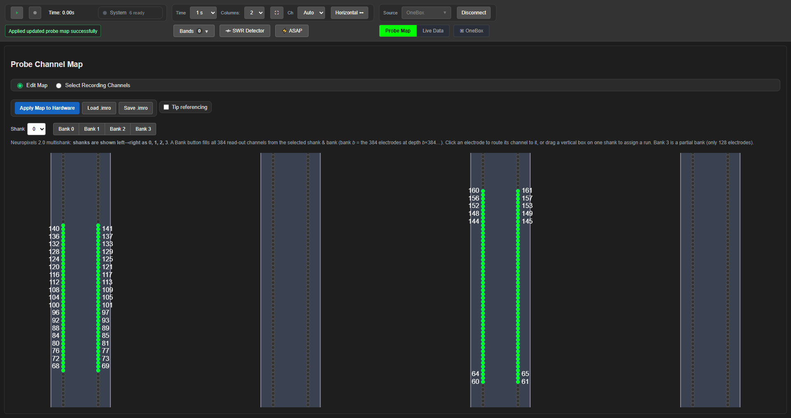
In this session the read-back confirmed the map, and the applied map spanned shank 0 with 168 channels (what was left of the default), shank 1 with 12, shank 2 with 102 and shank 3 with 102.
Apply also works while streaming: the backend pauses for a moment, writes the new map, resumes, and the live view re-orders itself to the new electrodes. There is no separate "live update" switch; Apply is it.
5. Stream#
Switch to Live Data and press Play (the green ▶). The traces are the electrodes you chose,
ordered by depth within each column and labeled by electrode number and column (85R is electrode
85, right-hand column).
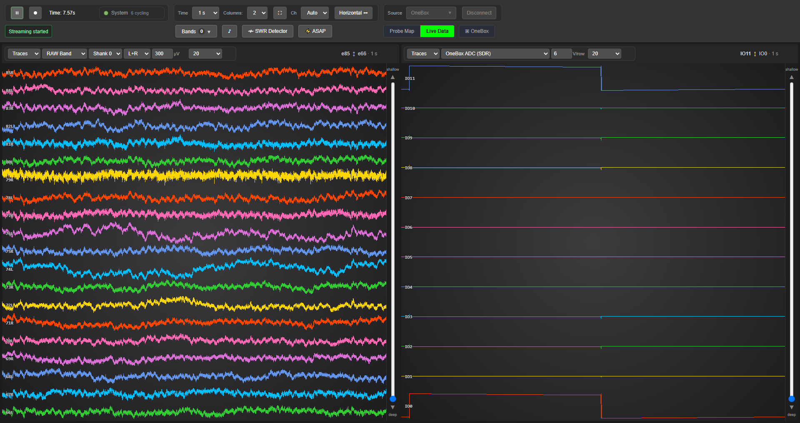
6. One shank per column#
Set Columns to 4 and give each column its own shank from the Shank dropdown in that column's control band. Four columns, shank 0 to shank 3, all live:
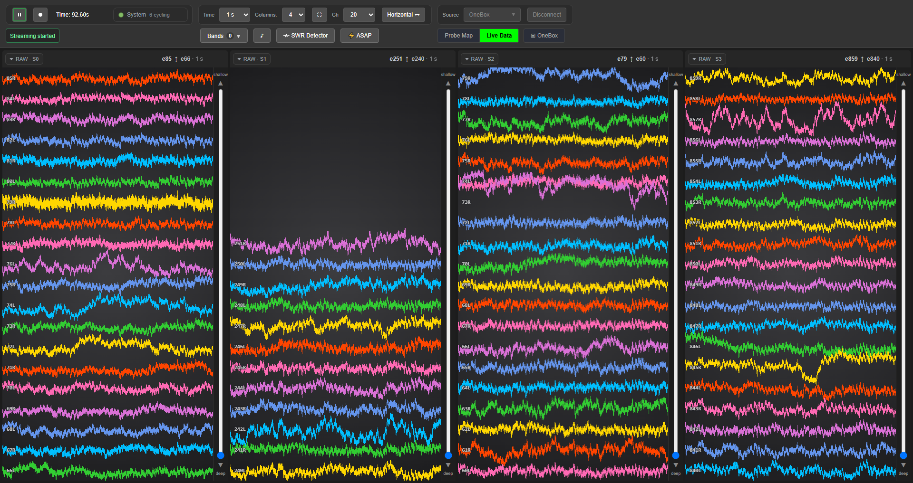
The shank 1 column is mostly empty in this capture because the applied map put only 12 channels on that shank (the rest of the default bank 0 stayed on shank 0). A column shows what its shank carries.
7. The controls inside a column#
Every column has its own control band. With several columns open there is no room for four of them, so each collapses to a chip naming the band and shank it shows:
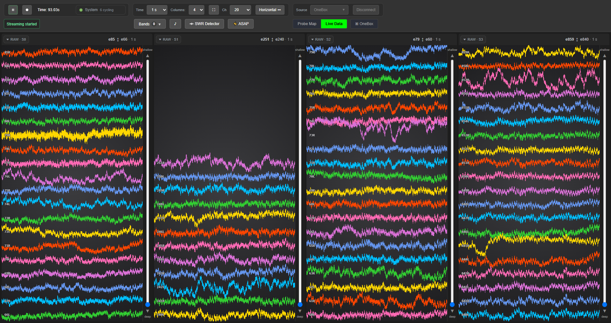
Click a chip and that column keeps its controls open. The filled dot inside the band is the pin:
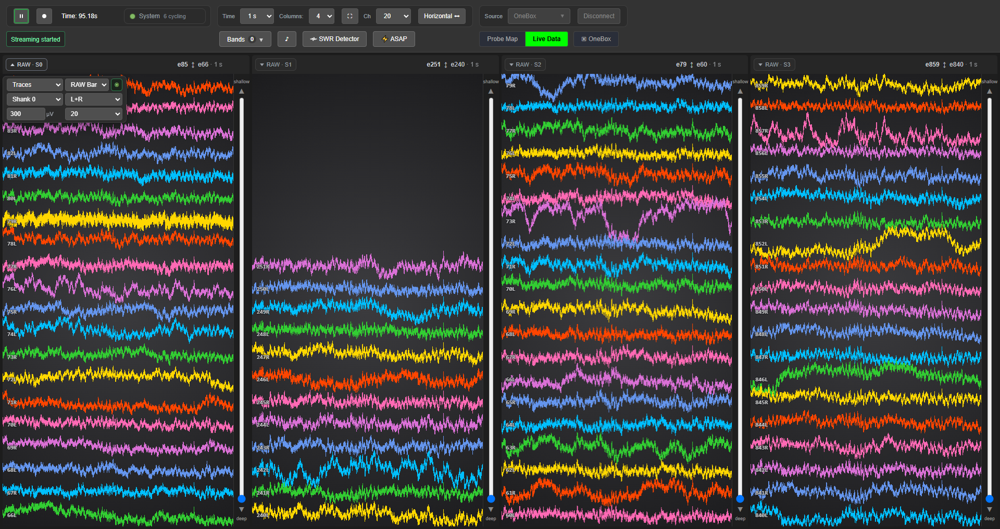
Three dropdowns decide what a column shows. Stream — every band the rig is producing right now (here the raw band and the OneBox ADC; the LFP and spike bands appear once you turn them on from the Bands menu):
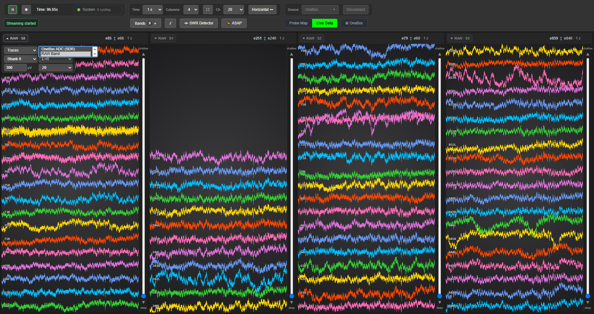
Shank — which of the four this column follows:
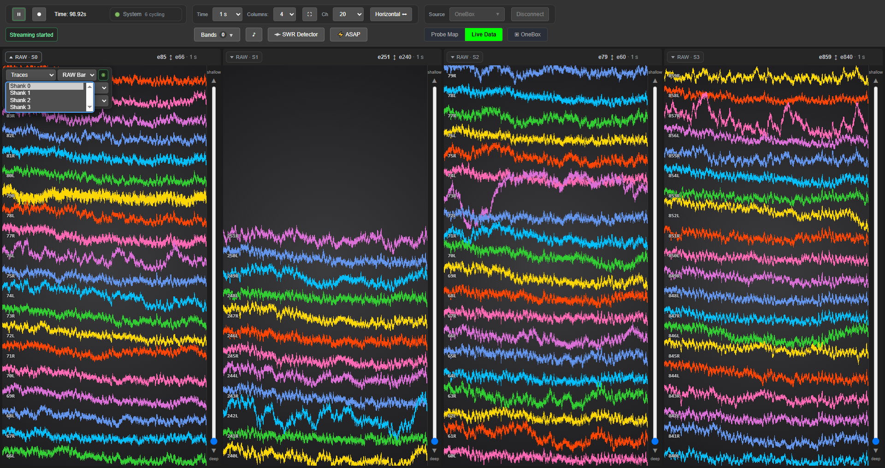
View — traces, or a heatmap of the same data:
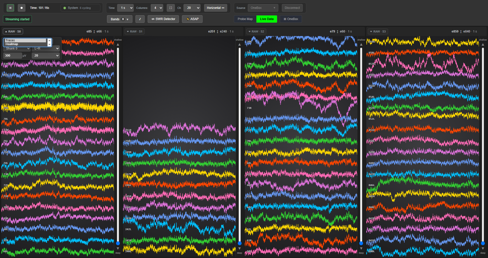
Click the pin again and the band folds back to its chip, giving the traces the width back:
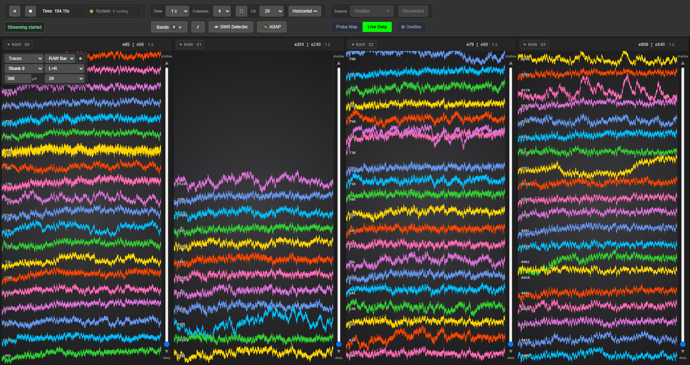
8. How many channels at once#
Ch sets how many traces each column shows. At 120 with four columns, every channel of every shank is on one screen:
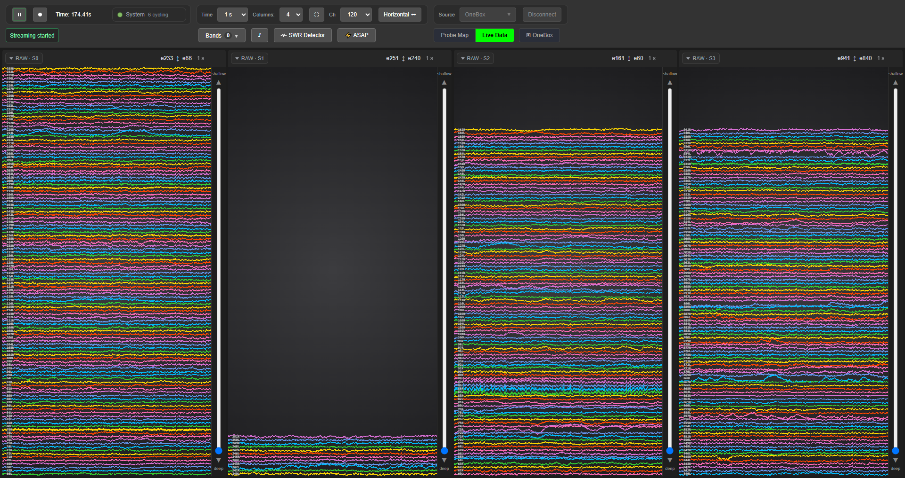
Time sets how many seconds of history a trace column shows — here five seconds on the same channels:
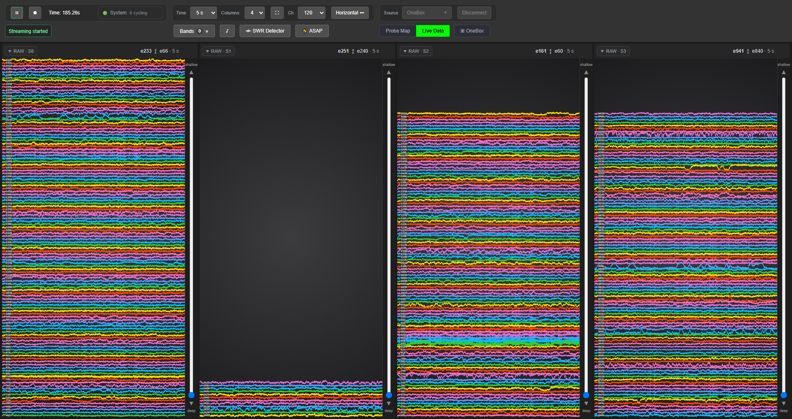
For a monitor turned on its side, the layout toggle stacks the columns as rows instead:
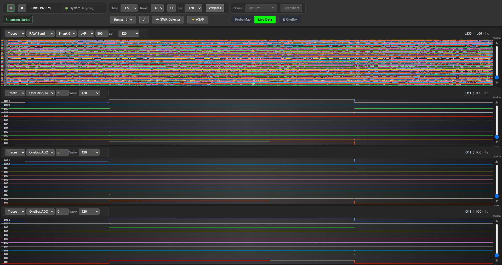
9. What comes next in the same session#
These are all in the video and in the reference pages; the stills were not captured on this pass.
| Step | Where it is documented |
|---|---|
| The heatmap of a whole probe beside its own traces, on the same time window | GUI-Guide.md §3a |
| The Bands menu: the LFP band (low-pass 400 Hz) and spike band (300–6,000 Hz) derived from the raw stream, off until you turn them on | OneBox-NPX2.md §5 |
| Listening to a channel: open the ♪ dock, click a channel label in the live view | SpikeAudio.md |
| The OneBox ADC in its own column (IO0–IO11, in volts) and the OneBox dock | OneBox-NPX2.md §7 |
| A second window for a second monitor (⛶ in the toolbar) | GUI-Guide.md §3b |
| The SWR detector dock | RippleDetection.md |
| Recording, and what appears on disk | OneBox-NPX2.md §6 |
10. Finish properly#
Pause, then Disconnect. Disconnect is disabled while streaming, on purpose. Disconnecting releases the OneBox; only then close the window.
Do not kill the backend from Task Manager with a probe or OneBox connected — the USB handle is
released only on a clean exit, and getting it back costs a physical power-cycle. The rule and the
reason are in OneBox-NPX2.md §1.
Captured 2026-09-02 on the rig: NP2.0 multishank probe on the OneBox, NP1.0 on the PXIe basestation alongside. Screenshots are dated in their filenames; the date is checked by the Python suite so a regenerated image cannot keep a stale date.